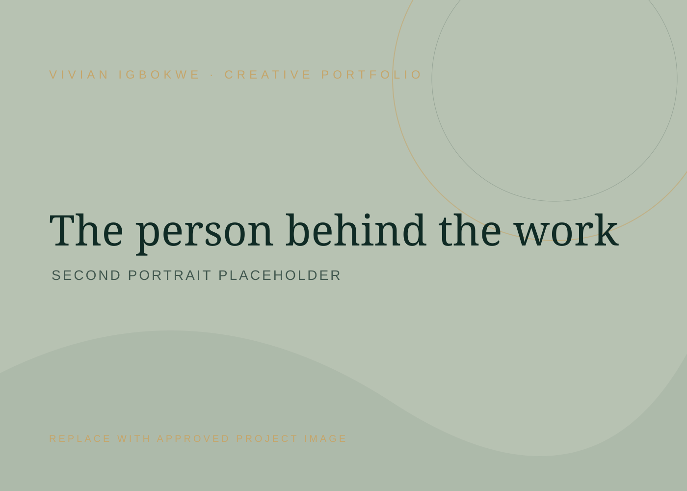

SOCIAL MEDIA · CREATIVE STRATEGY · CUSTOMER EXPERIENCE
Make it
matter.
Make it
memorable.
I'm Vivian Igbokwe, a social media & content strategist and customer experience specialist with 3+ years of experience helping brands show up with clarity, creativity and consistency.

Thoughtful execution.
A LITTLE ABOUT THE WORK
I bring the ideas, the execution and the human touch. From scroll-stopping content to customer conversations, I help brands create digital experiences people remember.
SELECTED WORK
Ideas turned into impact.
A selection of work across social media, content, community and customer experience. Each project opens into the thinking, contribution and evidence behind it.
Project cards currently contain editable starter copy and visual placeholders. Replace them with approved work samples and verified details before publishing.
HOW I WORK
Creative instincts.
Clear thinking.
I like work that looks good, makes sense and serves a real purpose. My process is collaborative, curious and grounded in what the audience actually needs.
Let's make something useful ↗Understand before creating
I get familiar with the brand, its audience, its goals and the problem we're trying to solve.
Find the useful story
I turn research, customer questions and brand knowledge into clear messages and relevant ideas.
Make it happen
I plan, create, coordinate and communicate so good ideas move from a document into real work.
Learn and improve
I pay attention to feedback and performance, then use what I learn to make the next iteration stronger.
WHAT I BRING
Different skills.
One thoughtful approach.
I'm comfortable moving between creative execution, customer conversations and the practical coordination that helps a team keep moving.
Social media & strategy
Content planning, platform management, audience research, reporting and campaign coordination.
Content & creative
Short-form video, UGC, storytelling, captions, creative direction and visual content.
Community & customer experience
Customer communication, onboarding, community engagement, issue handling and customer education.
Digital operations
Documentation, scheduling, follow-ups, coordination and keeping day-to-day workflows organised.

A LITTLE MORE ABOUT METHE PERSON BEHIND THE WORK
Hi, I'm Vivian.
A curious communicator with a soft spot for good stories, thoughtful systems and work that makes people's lives a little easier.
My background is in English Language and Education, and I bring 3+ years of hands-on experience across social media management, content creation, community management and customer support. I have worked with clients, teams and online communities across different time zones, adapting communication, handovers and delivery to keep work moving. I am comfortable with remote collaboration and asynchronous workflows. I've supported brands and digital communities, helped people navigate products and processes, and created content designed to connect with real audiences.
I enjoy the balance between creative thinking and practical execution: understanding what needs to happen, figuring out how to make it happen, and paying attention to the people on the other side.
Add your approved CV PDF to assets/documents using the filename shown above.
ZERO
TO SMM
STARTER PACK
BUILDER · EDUCATOR · CREATIVE
Turning what I know into something others can use.
Zero to SMM Starter Pack is my beginner-friendly learning product designed to help aspiring social media managers understand the foundations of the work and start practising with more confidence. It brings together structured lessons, practical templates and an implementation pathway.
This is part of my work as a practitioner who also builds educational resources, thinks about learner experience and turns knowledge into practical tools.
Ask me about the programme ↗Good work has no time zone.
I've collaborated with teams, clients and online communities across different time zones, keeping communication clear, handovers organised and delivery dependable.
MY TOOLKIT
Tools I use to
make things happen.
 Canva
Canva CapCut
CapCut Meta Business Suite
Meta Business Suite Metricool
Metricool Later
Later Notion
Notion Google Workspace
Google Workspace Zendesk
Zendesk Kit / ConvertKit
Kit / ConvertKit ChatGPT
ChatGPT Gamma
GammaKIND WORDS
Good work is a team effort.
These spaces are reserved for genuine feedback from people I have worked with. I only publish testimonials with permission.
“[Insert a genuine client testimonial about your social media management, content or reliability.]
TESTIMONIAL PLACEHOLDER
“[Insert genuine feedback about your communication, customer support, onboarding or community management.]
TESTIMONIAL PLACEHOLDER
“[Insert genuine feedback about your creativity, initiative, collaboration or contribution to a project.]
TESTIMONIAL PLACEHOLDER
HAVE SOMETHING IN MIND?
Let's make
good things happen.
Have a project, a growing team or a business that could use thoughtful creative and customer experience support? I'd love to hear what you're working on.
vivianigbokweify@gmail.com ↗